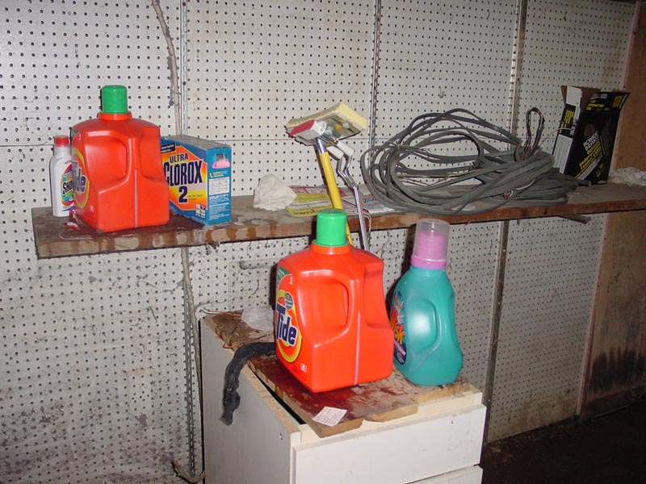

|  |
|
Here the playfullness of the decor is exposed. Amongst this tableau of bottles only one has detergeant. Can you guess which one? The shelves and drawers are all donated by previous residents. Note the use off 1 by 4's to function as a tabletop. Very chic and inventive. As is the dynamic placement of the used wiring sculpture that the creator refers to as "that used wiring we should throw out." [ Look left to the Washer | Back to by the stairs | Look right to the dryer corner ] |